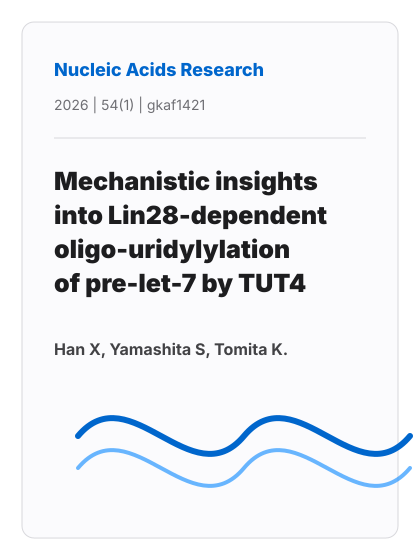
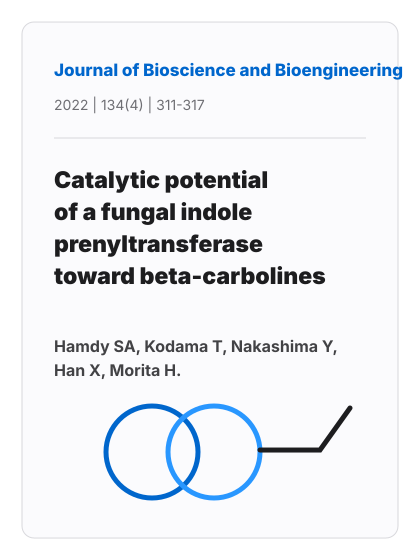
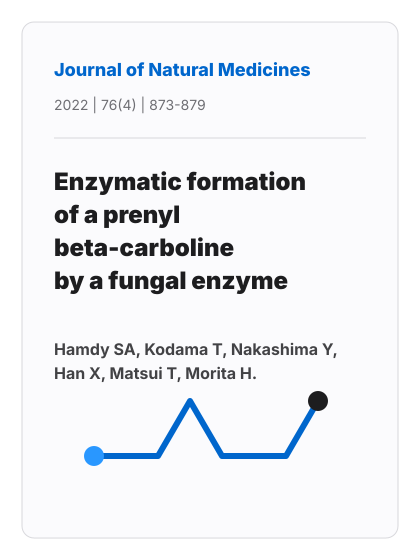

Mechanistic insights into Lin28-dependent oligo-uridylylation of pre-let-7 by TUT4
Han X, Yamashita S, Tomita K. Nucleic Acids Research. 2026;54(1):gkaf1421.
doi:10.1093/nar/gkaf1421Selected Publications

Han X, Yamashita S, Tomita K. Nucleic Acids Research. 2026;54(1):gkaf1421.
doi:10.1093/nar/gkaf1421
Hamdy SA, Kodama T, Nakashima Y, Han X, Morita H. Journal of Bioscience and Bioengineering. 2022;134(4):311-317.
doi:10.1016/j.jbiosc.2022.07.004
Hamdy SA, Kodama T, Nakashima Y, Han X, Matsui T, Morita H. Journal of Natural Medicines. 2022;76(4):873-879.
doi:10.1007/s11418-022-01635-0